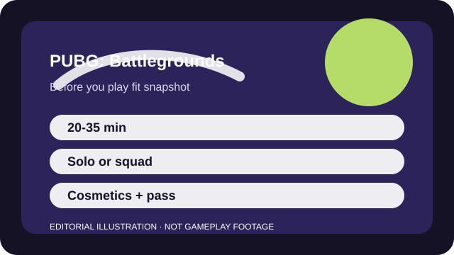

BEFORE YOU PLAY
What this page is and is not
This is a sourced editorial fit profile. It is designed to help with a yes-or-no play decision, and it does not claim a scored hands-on review.
The game is easiest to judge once you accept that downtime is part of the design. If traveling, scouting, and one hard fight sound good, it still owns that niche clearly.
The first-session loop to judge is simple: Loot efficiently, position for circles, and win a few high-pressure firefights rather than constant skirmishes.
Account progression exists, but the durable loop is map knowledge, circle decisions, and recoil control.

FIT SNAPSHOT
PUBG: Battlegrounds at a glance
| Genre | Battle royale shooter |
|---|---|
| Platforms | PC, PlayStation, Xbox, Mobile variants |
| Business model | Free-to-play battle royale with cosmetic and pass-based monetization. |
| Typical session | 20-35 minute matches where surviving deeper can consume a full play block. |
| Play style | slow-burn survival shooter |
| Learning barrier | PUBG is readable, but the gun handling and pace are harsher than more arcade-style battle royales. |
| Social shape | Solo, duo, and squad play all work; teamwork matters more than flashy mechanics. |
WHO IT FITS
Best fit, likely friction, and the social reality
players who want slower battle royale tension, longer sightlines, and punishing positioning
players who need constant fights or forgiving recoil
Solo, duo, and squad play all work; teamwork matters more than flashy mechanics.
Account progression exists, but the durable loop is map knowledge, circle decisions, and recoil control.
FIRST SESSION PLAN
How to test the fit in one evening
- Pick one smaller drop route with vehicles nearby so the early game stops feeling random.
- Loot only the basics first and learn to move when the circle asks you to move.
- Practice recoil in training mode instead of letting your first firefights teach it from scratch.
- Judge the pace after a full match where survival decisions matter, not after one hot drop wipe.
Use the first session to answer these fit questions instead of judging rank, win rate, or store value immediately.
- Do you enjoy survival pacing enough to accept quiet minutes between fights?
- Are realistic-feeling guns more appealing to you than ability kits?
- Can you enjoy a tense long match even if you fire only a few decisive bursts?
TIME, COST, AND COMMITMENT
What you are really signing up for
| Session budget | 20-35 minute matches where surviving deeper can consume a full play block. |
|---|---|
| Social demand | Solo, duo, and squad play all work; teamwork matters more than flashy mechanics. |
| Progression shape | Account progression exists, but the durable loop is map knowledge, circle decisions, and recoil control. |
| Spending pressure | Entry is free. Spending is mostly cosmetic and battle-pass driven. |
A single match can consume a real block of time, especially if you survive deep into the round.
Entry is free. Spending is mostly cosmetic and battle-pass driven.
SOURCES AND LIMITS
What was checked, and what can change
- Map rotation and event playlists can alter how quickly matches get to the tension you want.
- Balance tuning may change recoil or loot assumptions for newcomers.
- Pass cadence and crossover cosmetics do not change the core slower battle-royale fit.
This profile uses official game pages and defensible general product knowledge to frame the player fit. It does not claim live testing across every platform, accessibility need, or current event rotation.